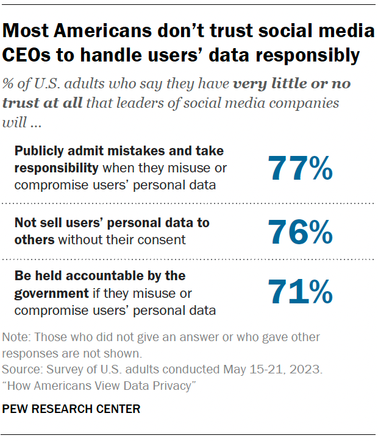
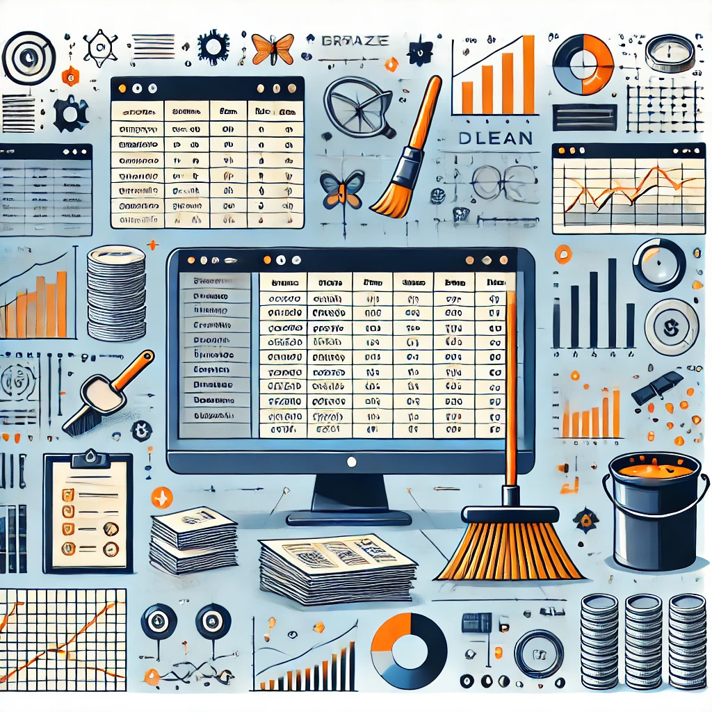

Countless data are processed daily to create actions and ideas globally, yet data is often overlooked despite its incredible value. Many fail to realize its importance,
yet data holds the power to transform industries, predict trends, and open new business opportunities. Big companies like Google, Amazon, and Netflix make the most of data,
using advanced analytics and data science to convert raw data into valuable insights. However, this process comes with challenges, such as cleaning incomplete data, preventing
breaches from third parties, and managing the complexities of large datasets.
Clean, secure data is a valuable asset, driving innovation, and better decision-making. Neglecting data means missing out on its potential to change the future. This article
emphasizes the importance of secure data, and the need to protect it from data attacks. It also shows how data can be used to create trends and open up valuable business opportunities.
Introduction
In today’s online-driven world, many people don’t fully understand the importance of data or misjudge what it can actually do. Often data is seen as just numbers with no significant
meaning to them, yet data has the potential to make a real difference. It can save lives, prevent disasters, and protect businesses from financial loss. For instance, data can predict
natural disasters, improve healthcare outcomes, and help companies make smarter decisions. But is data actually valuable? Its value lies in how it’s processed and applied to generate
real world results. However, this also involves risks, including data breaches and attacks that can lead to serious consequences. Despite these dangers, attackers continue to target
valuable data, raising the question: Is data truly valuable, or is it just a mirage?
Misconception and Misunderstanding about data
Many People underestimate the importance of data because they don’t see its immediate impact. To most, data seems like abstract numbers with little connection to real-world problems.
This misunderstanding stems from a lack of awareness about how data is collected, processed, and applied to critical areas (Coyle et al., 2020)
Data is much more than just numbers, it plays a crucial role in uncovering trends and predicting future events. Predictive models, for example, can help warn of hurricanes or signal
early signs of economic instability, potentially saving lives and preventing major disasters. However, the value of data extends well beyond these examples, it’s a valuable asset for
businesses, data presents many opportunities for growth and innovation. When used correctly, it helps businesses make smarter decisions and discover new possibilities. Understanding the
true value of data is key to making the most of it and not missing out on potential opportunities.
Data Worth
Data is much more than just a collection of numbers; it holds significant financial and strategic value. Companies like Facebook, Amazon, and Google leverage data to generate enormous
profits, primarily through advertising models. For instance, Facebook utilizes user data to deliver targeted advertisements, a key revenue source. Collecting this data requires years
of investment in technology and resources, which significantly enhances its value as an asset (Firican, 2017; Pew Research Center, 2023).

Understanding the role of data unlocks opportunities for growth and success for businesses and governments alike, particularly in decision-making and forecasting trends. However,
misconceptions about data persist, such as overemphasizing accuracy while overlooking other crucial aspects like consistency, completeness, and relevance. Poor data quality can
lead to errors with severe financial or societal consequences. By neglecting these dimensions, organizations risk missing significant opportunities for innovation (TDWI, 2017; Pew Research Center, 2023).
Data Processing

(A Figure showing a visual of Data Cleaning)
Data must be cleaned before analysis to ensure reliable results. As the saying goes, "garbage in, garbage out" — if the data is flawed, the output will be too. Clean data provides clear insights, while
dirty data results in confusion and unreliable conclusions.People tend to think having lots of data leads to better output/ result, yet this is not true, having too much data can also cause problems,
such as duplication, which lead to misleading conclusions. By cleaning data, irrelevant or duplicated information is removed, improving the reliability and accuracy of the results.
With the rise of Big data and predictive analytics, businesses are increasingly relying on data mining to understand consumer behavior, predict trends, and make smarter decisions that help them stay
competitive with other big companies.
Data Attacks
Data attacks occur for various reasons, mainly driven by the potential financial gain from selling stolen data or using it for fraudulent activities. Some attackers may also be driven by political
or ideological reasons, aiming to cause disruption within organizations or governments.Recent major breaches highlight the severe consequences of data attacks. For example, the 2017 Equifax breach
exposed personal information of over 140 million individuals, leading to widespread identity theft and financial loss (FTC, 2019). Similarly, the 2020 SolarWinds
hack targeted U.S. government agencies, compromising national security (GAO, 2021).
The consequences of these attacks can be significant. Victims often face financial damage, loss of reputation, and legal consequences. Businesses could face lawsuits, fines, and a loss of customer trust,
while individuals may experience identity theft or financial fraud. As Bada and Sasse (2019) point out, human factors in security breaches play a key role in enabling data attacks.Once third parties
gain access to stolen data, they can misuse it in a variety of malicious ways, including committing fraud, accessing financial accounts, or launching targeted cyber-attacks such as phishing or trojan
horse. The exploitation of stolen data can have long-lasting effects on individuals and organizations.
Conclusion
In conclusion, data is an invaluable asset, offering both strategic and financial potential. When properly processed, and applied, it can save lives, prevent disasters, and fuel business growth.
However, the importance of data is often misunderstood, with many focusing only on accuracy rather than overall data quality. Furthermore, data security remains a major concern, as data attacks can
cause significant harm to individuals and organizations. To make the most of data, businesses must focus on managing it well and securing it properly, ensuring it’s used responsibly to create
opportunities and reduce potential risks.